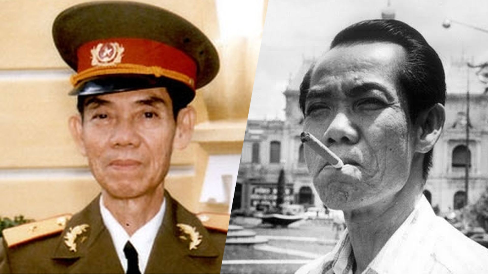

Giữa bối cảnh ấy, một người đàn ông đã thay đổi cục diện cuộc chiến…
Ông không hoạt động như một người lính…
Ông ra vào các phòng họp, tòa soạn, quán cà phê…
âm thầm thu thập những thông tin tuyệt mật.
